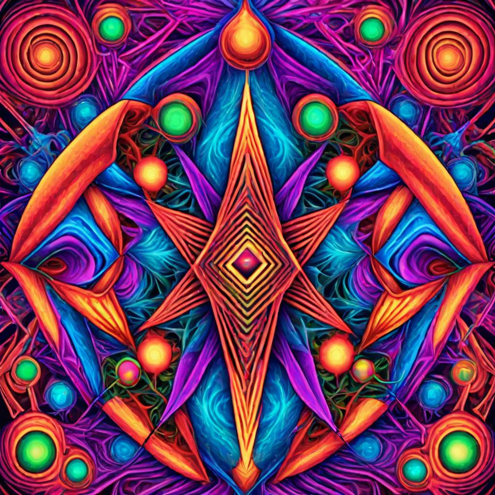

Exploring the Mystical Journey: Personal Stories of 5-MeO-DMT Experiences
5-MeO-DMT, also known as 5-methoxy-N,N-dimethyltryptamine, is a powerful psychoactive substance found in a variety of plants and the venom of the Bufo Alvarius toad. Revered for its profound and transformative effects, 5-MeO-DMT has gained attention from psychonauts, researchers, and spiritual seekers alike. In this blog post, we explore personal stories of 5-MeO-DMT experiences, offering a glimpse into the mystical and often life-changing journeys this substance can facilitate.
The Gateway to the Infinite: Sarah's Encounter
Sarah, a 32-year-old artist, describes her 5-MeO-DMT experience as a gateway to the infinite. She recalls feeling a sense of overwhelming love and unity with the universe.
"The moment I inhaled, I felt my body dissolve. There was no more 'me,' only an infinite expanse of pure consciousness. It was like becoming one with the fabric of reality itself. The experience was profoundly humbling and filled me with an immense sense of peace and interconnectedness."
Sarah's journey highlights the potential of 5-MeO-DMT to dissolve the ego and provide a direct experience of unity and oneness.
A Journey Through Time: Mark's Revelation
Mark, a 45-year-old teacher, shares a vivid account of his 5-MeO-DMT journey, which he describes as a voyage through time and space.
"As I exhaled, I felt myself being propelled through a tunnel of light. I traveled through various stages of my life, reliving moments with incredible clarity and emotional intensity. It was as if I was being shown the tapestry of my existence, and with it, came profound insights into my life's purpose and direction."
Mark's experience underscores the potential for 5-MeO-DMT to facilitate deep introspection and provide valuable insights into one's life path.
The Shamanic Vision: Maria's Spiritual Awakening
Maria, a 29-year-old healer, recounts her 5-MeO-DMT experience as a shamanic vision that deeply transformed her spiritual practice.
"I was transported to a realm inhabited by ancient, wise beings. They communicated with me through visions and symbols, guiding me to embrace my role as a healer. The experience was incredibly vivid and felt more real than my waking life. It reaffirmed my spiritual path and connected me to a lineage of healers and shamans."
Maria's story illustrates the potential of 5-MeO-DMT to evoke powerful spiritual experiences and connect individuals with ancient wisdom and traditions.
Overcoming Fear: David's Liberation
David, a 38-year-old entrepreneur, describes his 5-MeO-DMT journey as a process of overcoming deep-seated fears and anxieties.
"Initially, I felt an intense wave of fear and resistance. But as I surrendered to the experience, I found myself engulfed in a warm, comforting light. It felt like a rebirth, a complete release of all the fears and anxieties that had been holding me back. I emerged from the experience feeling lighter, more confident, and deeply liberated."
David's experience highlights the therapeutic potential of 5-MeO-DMT in helping individuals confront and release emotional and psychological blockages.
The Cosmic Dance: Emily's Ecstatic Union
Emily, a 26-year-old dancer, recounts her 5-MeO-DMT experience as an ecstatic union with the cosmic dance of life.
"I felt myself merging with the rhythm of the universe, as if I was dancing with the stars and planets. Every movement was a celebration of life, a joyous expression of existence. It was the most beautiful and ecstatic experience I've ever had. It filled me with an overwhelming sense of joy and gratitude."
Emily's journey emphasizes the ecstatic and celebratory aspects of 5-MeO-DMT experiences, revealing the profound joy and connection that can be felt with the universe.
Conclusion
The personal stories shared here offer a glimpse into the diverse and transformative experiences facilitated by 5-MeO-DMT. From profound spiritual awakenings and deep introspection to overcoming fears and ecstatic union with the cosmos, 5-MeO-DMT holds the potential to profoundly impact individuals' lives. As with any powerful substance, it is crucial to approach 5-MeO-DMT with respect, caution, and a clear intention, ideally under the guidance of experienced practitioners.
Whether you are a seasoned psychonaut or a curious seeker, the mystical journey of 5-MeO-DMT offers a unique and potentially life-changing exploration of consciousness and existence.